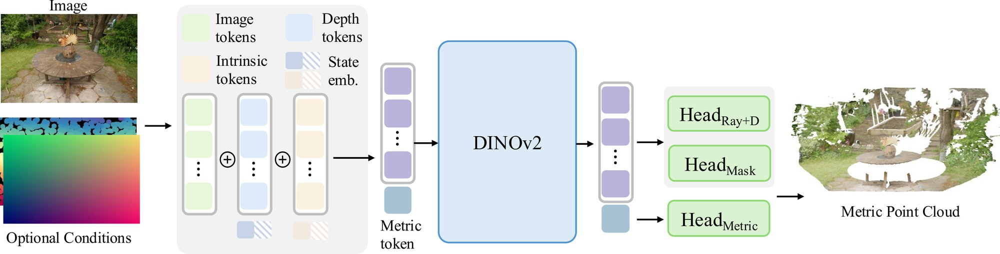
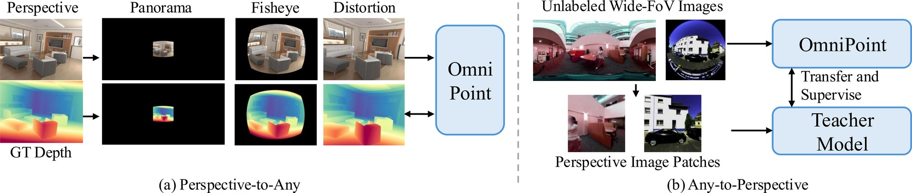
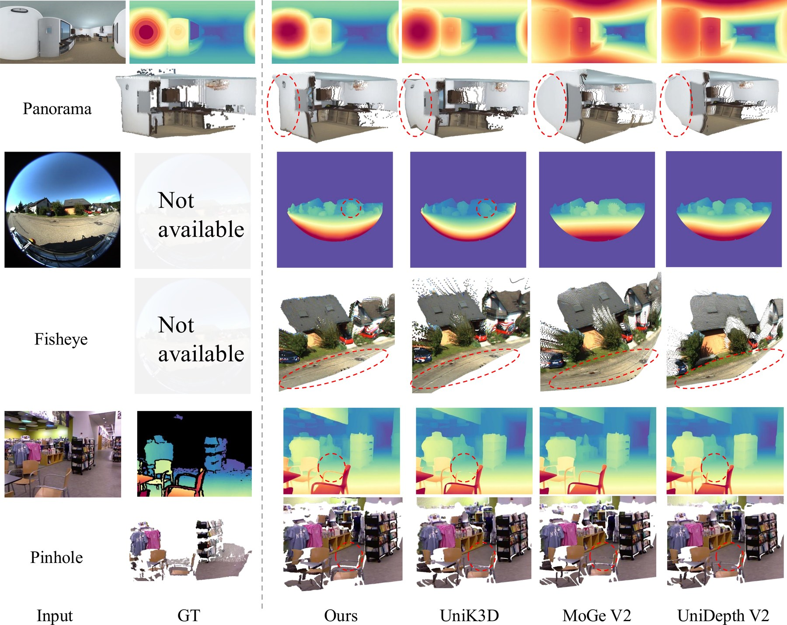
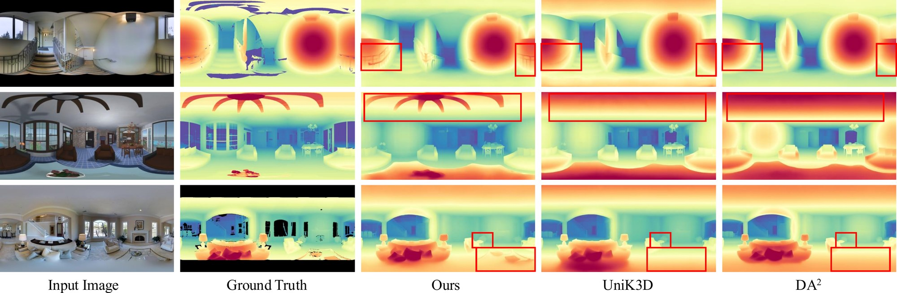

Recovering metric 3D geometry from monocular images is a fundamental computer vision task, yet current methods remain heavily fragmented by fixed camera model assumptions and inflexible input schemes. We present OmniPoint, a unified framework designed to generalize metric reconstruction across diverse imaging sensors, including pinhole, fisheye, and equirectangular projections, while accommodating varying geometric priors. To overcome projection rigidity, OmniPoint abandons conventional planar depth regression. It instead adopts a decoupled ray and distance representation alongside a decoupled training objective, explicitly separating the camera projection model from the scene structure. To address the severe scarcity of training data for alternative cameras, we introduce a bidirectional augmentation strategy that explicitly bridges labeled perspective data and unlabeled omnidirectional domains in 3D space. Furthermore, to seamlessly integrate optional inputs like camera intrinsics or sparse depth without destabilizing the network through feature distribution shifts, we propose a robust information injection mechanism. This mechanism utilizes learnable input state embeddings to resolve architectural ambiguity and applies vectorized Gaussian smoothing to densify irregular measurements. Extensive experiments demonstrate that OmniPoint achieves state-of-the-art zero-shot performance across multiple benchmarks, establishing a robust new standard for unified monocular 3D reconstruction.
Both usual prediction targets are tied to the camera. Planar depth z assumes a linear pixel→ray map, diverges as the field of view approaches 180°, and is undefined behind the camera; raw (x, y, z) forces one network to memorise a different projection for every camera type. We predict a unit ray r and a radial distance d instead: the ray absorbs all camera geometry, the distance carries pure scene structure.
Supervising the two predictions jointly lets a wrong ray penalise a correct distance. We supervise them separately, projecting the predicted distance along the ground-truth ray so that structural error is isolated.
| Representation, Rel↓ | S.FoV | L.FoV | 360° |
|---|---|---|---|
| Ray + D (ours) | 4.04 | 6.37 | 5.79 |
| XYZ point map | 4.28 | 6.74 | 6.28 |
| Point loss | Point Rel↓ |
|---|---|
| P + GT ray (ours) | 5.55 |
| naive P | 5.65 |
| disjoint D + Ray | 7.88 |
Both design choices are validated by ablation: the decoupled representation wins on every camera type, and the decoupled loss gives the most accurate point clouds.

Optional priors, without destabilising the backbone.
| Conditioning design (sparse depth) | Rel↓ | δ1↑ |
|---|---|---|
| Ours (full) | 3.21 | 98.2 |
| w/o Gaussian smoothing | 3.80 | 97.5 |
| w/o input-state embedding | 3.38 | 97.7 |
Trained with DINOv2 ViT-L and DPT heads on 29 labelled and 2 unlabelled datasets, on 72 A100s.
Ground-truth 3D for non-pinhole cameras is scarce. Rather than augmenting in 2D, we bridge labelled perspective data and unlabelled omnidirectional data in 3D, in both directions.

| P2A | A2P | 360° Rel↓ | 360° δ1↑ |
|---|---|---|---|
| – | – | 8.45 | 89.8 |
| ✓ | – | 6.21 | 94.5 |
| – | ✓ | 8.21 | 90.9 |
| ✓ | ✓ | 5.79 | 95.1 |
The two directions are complementary: together they cut 360° error from 8.45 to 5.79 Rel.


| Capability | DA v2 | MoGe V2 | Depth Pro | UniK3D | DA2 | PromptDA | OmniPoint |
|---|---|---|---|---|---|---|---|
| Affine-inv. depth | ✓ | ✓ | ✓ | ✓ | – | ✓ | ✓ |
| Affine-inv. points | – | ✓ | ✓ | ✓ | – | – | ✓ |
| Metric points | – | ✓ | ✓ | ✓ | – | – | ✓ |
| Pinhole | ✓ | ✓ | ✓ | ✓ | – | ✓ | ✓ |
| Fisheye | – | – | – | ✓ | – | – | ✓ |
| 360° panorama | – | – | – | ✓ | ✓ | – | ✓ |
| Intrinsics prior | – | – | – | ✓ | – | – | ✓ |
| Sparse-depth prior | – | – | – | – | – | ✓ | ✓ |
A subset of Tab. 1 in the paper.
| Method | S.FoV | L.FoV | 360° Images | |||
|---|---|---|---|---|---|---|
| Depth | Point | Depth | Point | Depth | Point | |
| UniDepth V2 | 4.23 | 6.06 | 7.81 | 18.4 | 19.3 | 102.8 |
| Depth Pro | 5.28 | 7.49 | 26.6 | 36.2 | – | – |
| MoGe V1 | 4.05 | 5.25 | 9.48 | 28.1 | 22.3 | 102.6 |
| MoGe V2 | 3.98 | 5.59 | 12.0 | 23.4 | 25.1 | 102.8 |
| DA3 | 4.78 | 6.33 | 12.8 | 29.9 | 25.5 | 101.5 |
| UniK3D | 4.14 | 5.61 | 8.77 | 11.5 | 10.4 | 11.4 |
| DA2 | – | – | – | – | 6.65 | 7.30 |
| OmniPoint (ours) | 4.04 | 5.55 | 6.37 | 6.66 | 5.79 | 5.90 |
Small-FoV: 8 pinhole benchmarks · Large-FoV: KITTI360 fisheye · 360°: Stanford2D3D-S + PanoSUNCG. A subset of Tab. 2 in the paper.
| Method | NYUv2 | KITTI | ETH3D | iBims-1 | DIODE | HAMMER | Mean |
|---|---|---|---|---|---|---|---|
| UniDepth V2 | 92.8 | 95.4 | 69.5 | 93.2 | 51.8 | 46.8 | 74.4 |
| Depth Pro | 91.9 | 38.3 | 32.8 | 81.5 | 37.7 | 63.0 | 57.5 |
| MoGe V2 | 96.1 | 62.9 | 90.8 | 83.0 | 66.4 | 65.6 | 77.5 |
| UniK3D | 94.4 | 93.6 | 83.7 | 92.8 | 73.0 | 58.3 | 82.6 |
| OmniPoint (ours) | 86.2 | 88.0 | 91.8 | 87.7 | 73.3 | 73.8 | 83.5 |
| + intrinsics | 88.3 | 90.7 | 93.0 | 88.3 | 75.2 | 74.5 | 85.0 |
| + sparse depth | 98.5 | 98.4 | 94.1 | 99.0 | 98.4 | 99.3 | 98.0 |
Bold marks the best of the image-only block; the rows below the rule add optional priors. Providing sparse depth turns the same model into a densification system. Tab. 3 in the paper.
@inproceedings{ye2026omnipoint,
title = {OmniPoint: Universal Monocular Metric Pointcloud from Any Camera},
author = {Ye, Botao and Pollefeys, Marc and Yang, Ming-Hsuan and Kundu, Abhijit},
booktitle = {European Conference on Computer Vision (ECCV)},
year = {2026}
}